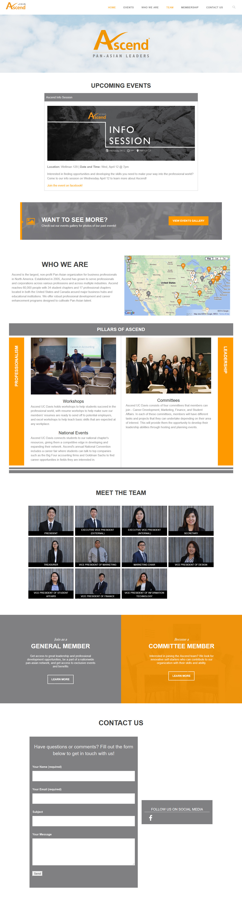
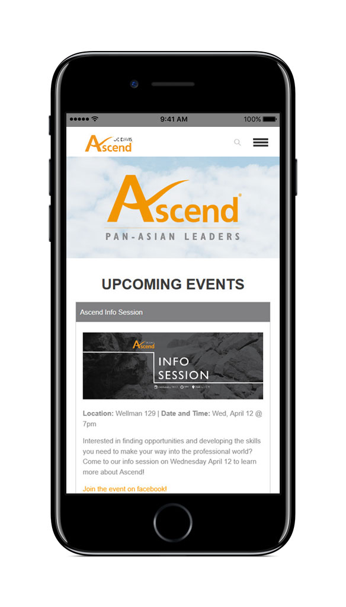

<div class="content">
    <div id="ascend" class="project">
        <p class="p-nav"><a class="change-page prev" href="/misc">&#8592; prev</a></p>
        <h3>Ascend UC Davis</h3>
        <ul class="skills-list top">
            <li>Web Design</li>
            <li>HTML</li>
            <li>CSS</li>
            <li>PHP</li>
            <li>WordPress</li>
        </ul>
        <div class="p-gallery">
            
          
        </div>
        <ul class="skills-list bottom">
            <li>Web Design</li>
            <li>HTML</li>
            <li>CSS</li>
            <li>PHP</li>
            <li>WordPress</li>
        </ul>
        <div class="p-details">
            <p class="p-description">Web design and WordPress theme customization for new Ascend UC Davis Chapter website. Developed site for easy management by Ascend officers, performance across platforms.</p>
            <a class="live-site" href="https://www.ascenducd.org/" target="_blank" rel="noopener noreferrer">View Live Site &Gt;</a>
        </div>
        <p class="p-nav"><a class="change-page prev" href="/misc">&#8592; prev</a></p>
    </div>
</div>